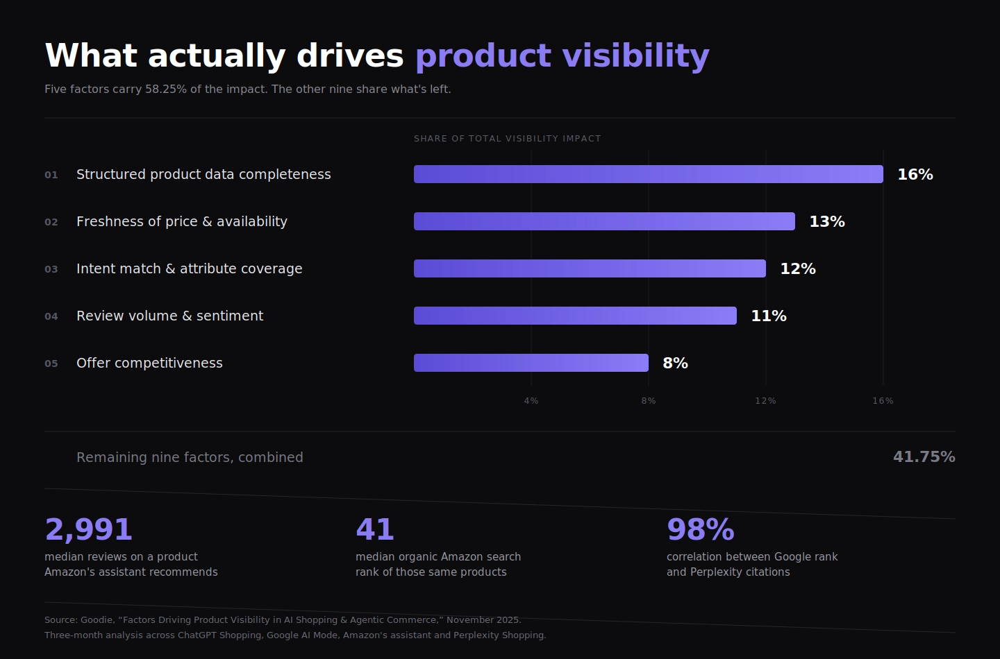
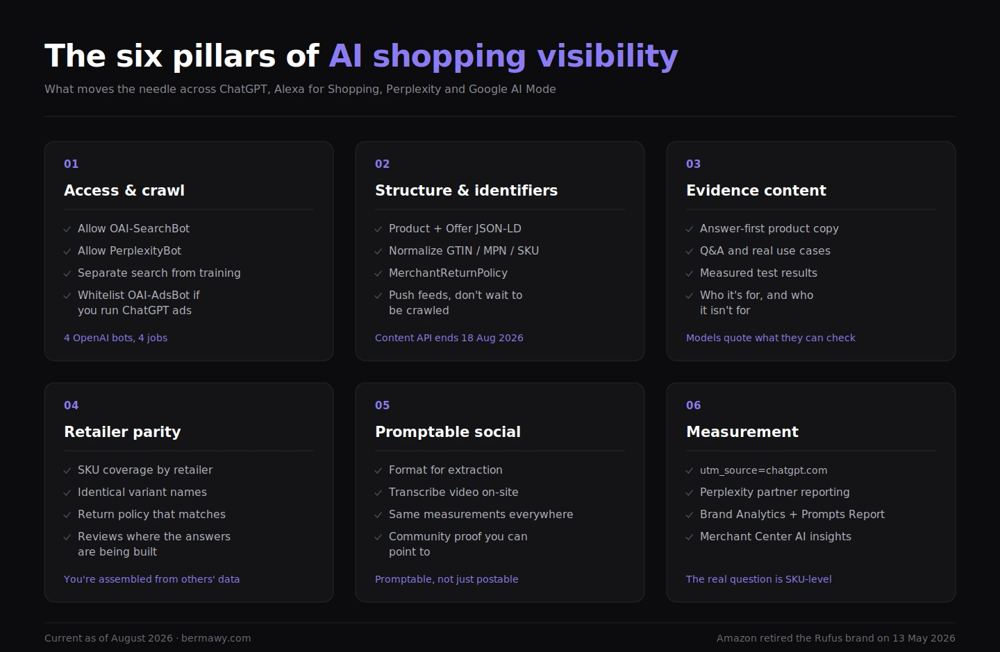

Updated August 2026. Since the first version of this guide, OpenAI ended Instant Checkout, Amazon retired the Rufus brand, and Google shipped an entirely new commerce protocol. I have provided rewrites throughout.
AI shopping optimization is the work of getting your products named inside an AI answer, then landing the click on your own site. As of August 2026, four surfaces matter, and each one reads you differently.
ChatGPT shows organic product results selected by the model and fed by Agentic Commerce Protocol product feeds. No in-chat checkout since March. Ads run in a separate lane.
Alexa for Shopping, formerly Amazon Rufus, answers from Amazon catalog data, reviews and community Q&A, and narrows a category to a handful of named products. Paid Sponsored Prompts sit alongside the organic answer.
Perplexity runs a zero-fee Merchant Program with in-chat Buy with Pro checkout and citations shown next to product cards. US only.
Google AI Mode and Gemini pull Merchant Center feeds into the Shopping Graph, with agentic checkout through the Universal Commerce Protocol.
The levers are the same on all four. A complete and fresh product feed. Identifiers that reconcile across every retailer that carries you. Evidence on the page a model can quote.
This is answer engine optimization applied to products. Here's how each surface works, and what to do about it.
The conversion sign flipped and almost nobody noticed
In March 2025, shoppers who landed on a US retail site from an AI assistant converted 38% worse than everyone else.
In March 2026, they converted 42% better.
Same channel. Same stores. Twelve months.
That's Adobe Analytics, measured across more than a trillion visits to US retail sites. By May the gap had widened to 54%. AI-referred visitors also spent 48% longer on site, browsed 13% more pages, and generated 37% more revenue per visit than everyone else.
They arrive pre-qualified. They did the research in the chat window and showed up to buy.
Now the second number from the same research, and it's the one that should worry you. About 34% of retailer homepage content is invisible to AI models. Product pages average roughly 66% readable. Cosmetics sites came in at 63%, electronics at 56%.
Demand moved. The shelf didn't.
That gap is the whole opportunity, and it's a data problem before it's a content problem.
One more thing changed, and it cuts against everything the industry believed twelve months ago. Everyone spent 2025 building for checkout inside the chat. On March 24, 2026, OpenAI shut Instant Checkout down. Its own language: the initial version "did not offer the level of flexibility that we aspire to provide." Merchants now use their own checkout, and OpenAI put its weight behind product discovery instead.
Perplexity kept in-chat checkout and still charges merchants nothing, but it's US-only and small. Amazon pulled tighter into its own garden and started charging for placement inside the answer. Google went the other direction entirely and shipped UCP.
Read across all four and the conclusion is boring and useful. Discovery is the channel. Checkout mostly isn't. Get named in the answer, then close the sale on your own site.
This guide is how you get named.
AI doesn't rank. It chooses.
Search gave you a list. You could sit at position seven and still take the click, because the shopper scrolled. An assistant gives an answer, and an answer names three to five products. There is no page two.
I've argued before that AI search changes the unit of competition from a URL to a fact. In shopping it changes again, to a SKU. And the mechanics behind that explain why so much conventional optimization does nothing here.
Selection runs in two phases. Retrieval pulls somewhere between 100 and 1,000 candidates out of a vector database in under five milliseconds. Then a ranking model cuts that down to the three to five products that make the card. You have to win twice, and the first cut is decided almost entirely by your structured data.
Our team at Goodie spent three months analyzing how ChatGPT Shopping, Google AI Mode, Amazon's assistant and Perplexity actually decide. The study found fourteen factors that control product visibility. The top five account for 58.25% of the impact:
- Structured product data completeness (16%)
- Freshness of price and availability (13%)
- Intent match and attribute coverage (12%)
- Review volume and sentiment (11%)
- Offer competitiveness (8%)

Notice what isn't in there. Your homepage. Your brand campaign. The keyword in your product title, which the model rewrites anyway. The top two factors, more than a quarter of the total between them, are data hygiene problems most brands have quietly delegated to whoever owns the feed.
Three findings from that work stayed with me.
The median product Amazon's assistant recommends has 2,991 reviews. Its median position in Amazon's own organic search results is 41. The assistant isn't reading your search rank. It's reading your content.
87.2% of recommended products had enhanced A+ content. 12.8% had basic descriptions.
And Perplexity showed a 98% correlation between Google SERP rankings and its citations, which makes it the easiest of the four to win. If your SEO is already good, you're most of the way there.
You need two stacks, not one
Every one of these surfaces reads you twice.
The feed stack is machine truth. Merchant Center, your ACP product feed, Perplexity's SFTP feed, your Amazon backend attributes. It decides whether you're eligible to be considered at all.
The evidence stack is human truth a model can lift. Product page copy that answers a question directly, reviews and Q&A with actual substance in them, third-party pages making checkable claims about your product. It decides whether you get named.
Most teams have one of the two, and you can tell which from the symptoms. Feed-only brands are eligible everywhere and named nowhere: perfect data, nothing to say. Content-only brands write beautiful buying guides that no assistant can price, because the feed is stale or the GTIN doesn't match what the retailer has.
They fail independently. Audit them separately.
SteelSeries is what it looks like when both are working. They fixed outdated product mentions on the review sites and Reddit threads that assistants actually cite, reformatted content into question-and-answer structure, and cleaned up how AI crawlers read the site. Six months later: 335% more traffic from AI sources, 3.2x better conversion, and the top retrieval position for gaming peripherals across every major model.
The four surfaces, side by side
What actually moves the needle

1. Let the right bots in
OpenAI documents four crawlers now, and they do different jobs.
OAI-SearchBot builds the search index behind ChatGPT. It isn't used for training, and it takes its own robots.txt token. GPTBot is the training crawler. ChatGPT-User fetches pages during user-initiated browsing. And OAI-AdsBot, added this year, visits pages submitted as ad landing pages to check policy compliance and inform relevance.
Blocking the training crawler is a defensible business decision. Blocking the search crawler alongside it, which is what most blanket rules do, removes you from ChatGPT product results entirely. It also removes you from paid placements you're already paying for, because the recommendation engine and the ad engine read the same web.
I've watched brands spend six figures on a channel where the bot that delivers the recommendation was disallowed in a file nobody had opened in three years. It doesn't show up in any dashboard. Your CPCs look normal, spend draws down, and CAC just reads high.
Same principle for Perplexity: allow PerplexityBot if you want to appear in its results.
Write down what you allow for training versus search, and why. Then check it quarterly, because your WAF vendor will change a default category and undo it for you.
2. Make your products machine-parsable
Emit complete JSON-LD on every product page. Product with name, description, brand, images, sku, gtin, mpn. Offer or AggregateOffer with price, currency, availability, url, seller. AggregateRating and Review where you have them. MerchantReturnPolicy with the window, the fees and the methods.
Then normalize your identifiers. Same GTIN, same MPN, same variant names across your own site, every retailer that carries you, and every feed you push. When identifiers drift, a model splits one product into three, and your review signal splits with it. Kits and bundles break first, because nobody names a kit the same way twice.
Two deadlines worth putting in your calendar right now.
Google shuts off the Content API for Shopping on August 18, 2026. After that date, calls to the v2.1 endpoints stop working. If you're on the official Shopify or WooCommerce channels, your platform handles it. If you have custom code talking to Merchant Center directly, migrate to Merchant API v1 or your listings go dark.
And feed freshness is now a ranking input, not hygiene. Google's Shopping Graph holds more than 50 billion listings and refreshes over two billion of them every hour. ChatGPT accepts feed updates every fifteen minutes. A nightly push means you're wrong all day, and stale data doesn't just cost you that impression. It teaches the system your data is unreliable.
3. Evidence beats adjectives
Models quote what they can check.
Real photographs. Measured test results. Pros and cons stated plainly. Who the product is for, and who it isn't for. Fit notes, materials, compatibility, care instructions. Comparison tables against the alternatives a shopper is actually weighing.
Write descriptions that explain context and use case, not feature lists. Amazon's knowledge graph work encodes relationships like "capable of," "used for," and "intended for audience." A shopper asking for lightweight summer footwear can surface cork-sole sandals with no keyword overlap at all, because the model understands the semantic relationship. Feature lists give it nothing to reason with.
ChatGPT generates labels like "Budget-friendly" and "Most popular" from whatever it can find, and states plainly that those labels aren't verified. Give it something verifiable anyway. A "budget-friendly" tag usually means reviewers keep mentioning good value, not that you're the cheapest.
4. Become a source the models already trust
In most categories, an assistant doesn't send shoppers to your site. It sends them to the retailers that carry you and quotes the publishers and forums that reviewed you. You're being assembled out of other people's data.
So build a shelf map, not a content calendar.
Start with your top ten retailers by category revenue, from your own sell-through rather than a generic list. Verify SKU presence and availability at each one. Missing stock where you thought you were listed is the most common finding and the cheapest to fix.
Then unify identifiers everywhere. Same GTIN, same shade names, same pack sizes, same bundle contents.
Then align policy language. Publish returns and shipping in plain English on your own site, mark it up, and make sure no retailer page contradicts it. A model reading two different return windows will summarize the worse one.
Finally, earn the citations that already win in your category. In beauty and personal care, Goodie's citation research found assistants routing shoppers through a predictable mix of specialist chains, mass retail and marketplaces, with a specific set of editorial domains doing most of the citation work. Your category has its own shortlist. Find it before you write a word.
Reddit matters more here than most brands want to accept. It sits near the top of the most cited domains across large language models, and ChatGPT explicitly pulls from community discussions. You can't buy that. You can only earn it, or forfeit it. I've written a longer playbook on earning Reddit citations if that's the gap.
5. Make your social promptable
Think promptable, not just postable.
Format for extraction: concise bullets, labeled pros and cons, quick fit notes, plain ingredient and material statements. Cross-post the evidence, then transcribe it on your own site so the same claims exist as parseable text. Keep variant names, measurements and materials identical across captions, product pages and retailer listings.
Assistants are multi-modal and source-agnostic. They blend social, UGC, editorial and retail into one answer. Your job is to make the same facts appear everywhere, in the same words.
6. Measure it in a way a CFO will accept
ChatGPT appends utm_source=chatgpt.com to outbound referrals. Bucket it into a dedicated AI Search channel and track landings, AOV and conversion like any other source.
Perplexity gives you partner reporting for Buy with Pro. Set up a separate order tag during Merchant Program onboarding so you can isolate that revenue.
Amazon keeps conversions inside its walls. Use Brand Analytics, Business Reports and the Sponsored Products Prompts Report, then quantify the halo with media mix modeling.
Google now surfaces AI performance insights inside Merchant Center, alongside Ask Advisor for feed and campaign work.
The monitoring layer across all four is a separate decision, and a crowded one. I keep a running buyer's guide to AI search visibility tools if that's the stage you're at.
None of that answers the question you'll actually be asked, which is SKU-level: which individual products got named, on which surface, next to which competitor. That's the gap we built Goodie's agentic commerce tooling to close.
The platforms, one at a time
ChatGPT: how products actually get chosen
OpenAI is more transparent about this than people assume. Product results are selected independently by the model, aren't ads, and aren't influenced by OpenAI partnerships. Ads exist in ChatGPT now, in a separate lane with their own crawler.
When it ranks multiple merchants selling the same product, it weighs availability, price, quality, and whether you're the maker or primary seller. When it decides which products to surface at all, it uses structured metadata from first-party and third-party providers plus other third-party content.
Read that twice, because it settles an argument. Your title copy isn't the lever. ChatGPT rewrites titles and descriptions to normalize them, since merchants describe the same product a dozen ways. Stuffing keywords into a title is work you're doing so a model can undo it.
What to do:
Get your feed in. ACP now carries product feeds and promotions, with delivery through providers like Salesforce and Stripe. On Shopify you're already in via Shopify Catalog with no per-merchant work. Everyone else applies for direct feed access.
Unblock OAI-SearchBot, and check your WAF isn't quietly doing it for you.
Fix identifiers before you fix copy.
Write claims a model can lift.
And plan around the price lag. OpenAI acknowledges that merchant price and shipping updates take time to propagate. Arguing with it is wasted energy.
Target, Sephora, Nordstrom, Lowe's, Best Buy, The Home Depot and Wayfair have already integrated into ACP for discovery. If you sell in those categories, you're being compared against feeds more complete than yours, today.
Alexa for Shopping: inside Amazon's walls
Amazon retired the standalone Rufus chatbot on May 13, 2026 and folded its capabilities into Alexa for Shopping. The assistant moved out of a side panel and into the main search bar. It's free to any signed-in US customer, with no Prime, no Echo and no app required.
The listing work you did for Rufus still applies. The stakes went up, because the assistant now answers many product questions before a shopper ever reaches a product detail page. Weak data costs you the answer before it costs you the click.
Complete your backend attributes: materials, dimensions, compatibility, certifications. The filtering layer reads structured attributes, not listing prose, and this is where most competitors haven't even started.
Build A+ content with comparison tables and use-case grids. Seed community Q&A. Sustain review velocity, because volume and sentiment carry more weight here than on any other surface.
Then handle the paid lane deliberately. Sponsored Prompts reached paid US general availability on March 25, 2026. Eligible Sponsored Products and Sponsored Brands campaigns are auto-enrolled, Amazon writes the prompt copy from your detail pages, Brand Store, reviews and campaign data, and each click bills at your campaign's standard CPC. You can't author the text. You can improve the content it's generated from, and you can pause the prompts that underperform. Download the Prompts Report and actually read it.
Perplexity: small, high-intent, free
Perplexity is the smallest of the four and the least friction to enter.
The Merchant Program costs nothing. No listing fees, no commission, and Perplexity funds free shipping on Buy with Pro transactions out of its own pocket. The feed is Google Shopping format over SFTP, and Shopify stores auto-sync without applying. Perplexity discontinued advertising entirely in February 2026, so there's no paid lane to buy your way into.
Given the 98% correlation between Google rankings and Perplexity citations, the play here is unglamorous: keep your SEO strong, publish genuinely authoritative explainers, and make sure your product data is complete enough to card.
Two caveats. It's US-only for both shoppers and merchants. And Amazon's litigation over the Comet agent is unresolved, which leaves some uncertainty over agentic buying generally. Worth watching, not worth waiting on.
Google AI Mode: the feed is the product
Google launched the Universal Commerce Protocol on January 11, 2026, an open standard built with Shopify and a coalition of retail and payment partners. It covers discovery through cart, checkout and post-purchase across Search, AI Mode and Gemini. You stay merchant of record throughout.
At Google Marketing Live in May, that expanded again: Universal Cart for cross-retailer carts, buy-now-pay-later through Affirm and Klarna, and rollout to Canada and Australia with the UK to follow.
Three things to do:
Get your Merchant Center feed complete and error-free, because it's the entry point to everything else. No feed, no Shopping Graph, no AI Mode.
Add conversational attributes. Google now lets you write product descriptions that reflect how people actually ask, rather than how taxonomies expect. This is available globally and most catalogs haven't touched it.
Get your imagery right for virtual try-on, which means on-model shots, consistent angles and clean backgrounds. If the model can't confidently match a generated look to your SKU, somebody else gets the click.
Then decide whether Business Agent, which lets shoppers chat with your brand directly on Search, and Direct Offers, which places exclusive discounts inside AI Mode, are worth piloting. Both are new enough that the competitive set is thin.
If you're weighing tooling to run this across all four surfaces rather than one at a time, the NoGood team keeps a current rundown of AEO and GEO tools for ecommerce brands.
The pitfalls that cost the most
- Blocking the wrong bots. The single most expensive configuration error in the channel, and the hardest to detect.
- Half-finished schema. Missing Offer or return policy fields limits your eligibility for merchant features outright.
- Identifier drift. Different GTINs or variant names across retailers fracture your presence and scatter your review signal.
- Review and Q&A silence. When reviews stall and Q&A sits empty, the assistant has nothing to work with, and a richer competitor takes the slot.
- Nightly feeds against an hourly graph. You're not slightly behind. You're teaching the system not to trust you.
- Unmigrated Content API integrations. The hard cutoff is August 18, 2026.
What 2025 got wrong
Worth being honest about, since I wrote some of it.
The consensus a year ago was that in-chat checkout would be the battleground, that direct merchant feeds were speculative, and that the brands who integrated payments earliest would win. Two of those three aged badly.
Feeds turned out to be the real story, and they shipped faster than anyone expected. Checkout went the other way: OpenAI retreated, Amazon kept purchases inside its own walls, and only Google leaned harder in. Barely a dozen Shopify merchants ever went live on Instant Checkout before it closed.
What that leaves is a clearer picture than we had. The assistant is a discovery surface with a shrinking shortlist. The winning position is being one of the three to five products that gets named, then owning everything that happens after the click.
Three things I'd watch from here. Paid placement inside the answer is spreading, and Amazon has already normalized it. Feed freshness is becoming a competitive moat rather than a maintenance task. And the brands treating this as a product data problem are pulling away from the brands treating it as a content problem.
The window is still open. It's narrower than it was in September.
Where to start this week
If you do nothing else, do these four in order.
Open your robots.txt and confirm OAI-SearchBot and PerplexityBot aren't disallowed. That's a ten-minute check that decides whether anything else matters.
Confirm your Merchant Center integration isn't running on the Content API. The cutoff is August 18, 2026.
Pull your twenty best-selling SKUs and check that the GTIN, variant name and price match across your own site and your top three retailers. You will find breaks. Everyone does.
Then read the reviews on those twenty products and ask whether an assistant could answer a shopper's question from them. If it couldn't, that's your content brief.
None of this is glamorous work. It's feed hygiene, schema, and reviews, which is roughly the least exciting list of priorities I've ever published.
It's also the difference between being one of the five products a model names and not existing at all.